SOLIDS
Solids is a robust, open-source Python package for crystal structure prediction. It natively integrates with the Atomic Simulation Environment (ASE) and uses PyXtal and DScribe to generate symmetry-based random structures and compare their structural features using morphological descriptors.
- It is available in the official Python Package Index repository and can be easily installed using pip.
- It can be run directly in cloud computing environments, such as Google Colab or Kaggle
- It is compatible with UNIX systems—such as Linux and macOS
- It offers full integration with GULP, VASP, and ASE's EMT
- It can run as a Python library within resource management systems such as PBS or SLURM, making it well-suited for use on computing clusters.
Solids' Workflow
Solids performs energy landscape exploration through two main algorithms:
- The Stochastic Algorithm allows for effective pree-screening of the energy landscape by performing relaxation in stages, meaning that the level of theory can be adjusted or changed mid-run.
- The Evolutionary Algorithm builds on SA by creating new generations using evolutive operators such as crossover and mutation to widen the exploration of the potential energy surface.

Installing Solids
In Unix-based systems such as Linux and MacOS you can install Solids using pip, as shown bellow:
pip install solids
If you are more into installing things on your own, you can clone
the GitHub repository. Feel free to edit it and
add your own touch to the code! NOTE: During manual installation it is necessary to update your
PYTHONPATH. For more information on how to modify your path
clik here. For example,
if your working directory is /home/solids/ then the path should look something like this:
export PYTHONPATH=/home/solids:$PYTHONPATH
Running Solids
After successful installation, the package is ready to be used as
a library (import solids), or through the command line interface (CLI) using
the command x-solids.
When using the CLI, the work flow only requires that you provide an inputFile, and
Solids is pre-programmed to give you examples with default values for both algorithms (stochastic and evolutive) using all
interfaced calculators. Currently, Solids is interfaced with ASE's EMT ( input_emt), VASP
( input_vasp), and GULP ( input_gulp). To create your first input simply write in the terminal one of the next
lines and hit enter.
NOTE: the extension of the input command determines the calculator to be used.
x-solids input_emt
x-solids input_vasp
x-solids input_gulp
Each of the files generated contains all the flags with default values to run a calculation using a specific calculator. We encourage yo to personalize the provided values to your needs and desires (we recommend carrying preliminary tests using the EMT calculator). You can find more details about the meaning of each flag in the comments of the input file or in the next table:
| Flag name | Meaning | Format and default value |
|---|---|---|
| ---COMPOSITION--- | Crystal's Chemical composition | ChemSym NumOfAtoms, Default: Null |
| formula_units | NumOfAtoms in COMPOSITION is multiplied by this number | (int) Default: 2 |
| dimension | Dimension of the crystal, suported 2- and 3-dimensions | (int) Default: 3 |
| volume_factor | Controls the volume factor of the unit cell | (float) Default: 1.0 |
| tol_atomic_overlap | Tolerance value to allow atomic overlap | (float) Default: 0.97 |
| nof_initpop | Size of the initial population | (int) Default: 50 |
| algorithm | Choose between stochastic / evolutive | (str) Default: evolutive |
| tol_similarity | Tolerance threshold for similarity | (float) Default: 0.97 |
| cutoff_energy | Energy Cut-off in eV | (float) Default: 2.0 |
| cutoff_population | Number of final candidates | (int) Default: 10 |
| calculator | Available calculators: EMT, VASP, GULP | (str) Default: EMT |
| nof_processes | Number of parallel local opts | (int) Default: 5 |
| nof_matings | Number of matings | (int) Default: 20 |
| nof_strains | Number of strain-mutants | (int) Default: 6 |
| nof_xchange | Number of atomExchange-mutants | (int) Default: 6 |
| nof_stages | Number of Optimization Stages | (int) Default: 2 |
| nof_repeats and nof_stagnant | Stop the whole process if the best “nof_stagnant” solutions are found “nof_repeats” consecutive times | (int) Default: 5 and 10 respectively |
| nof_generations | Number of generations | (int) Default: 20 |
Once you got the input tuned to your needs, run the code using the x-solids command
followed by yout input and output using:
x-solids inputFileEMT > outputFile.txt
A little bit of theory
The relation between crystal structures and energy
It is no secret that, by using modern first-principle calculations and the knowledge of the atomic arrangement of a system, we can estimate and even predict its properties. Furthermore, we know that theoretical low-energy structures have the highest probabilities of being found in nature. Therefore, locating the nuclear positions of a chemical system when it is at its lowest energy, i.e., the ground state equilibrium geometry, is incredibly important to modern chemists. Additionally, such theoretical investigations allow one to analyze structures under extreme conditions of pressure and temperature, making them an excellent ally to experimentally challenging studies.
However, locating the structural geometry lowest in energy, the so-called Global Minimum (GM), is not a trivial task. Any algorithm tasked with finding a GM is faced with two major challenges: The first one is of mathematical nature since the dimension of the abstract construct known as the Potential Energy Surface (PES), where we plot each possible atomic configuration vs. its energy, depends on the degrees of freedom of the system (3N-6 for a non-linear molecule with N atoms). This means that the PES is exceedingly multidimensional!
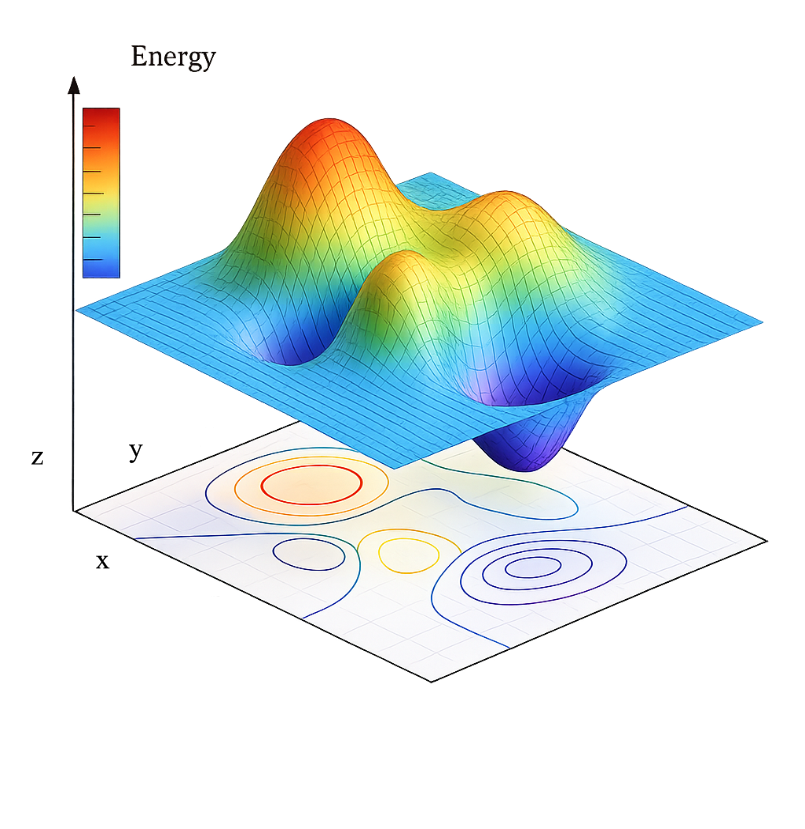
The second challenge is purely statistical: There is an almost infinite number of possible arrangements for a given set of atoms! For instance, it is estimated that the number of possible configurations for a periodic system with a cubic cell volume of 10 Å3 containing only 10 atoms of compound AB is of the order of 10 14. If we increase the number of atoms inside the unit cell to 30, the possible configurations increase to a staggering 1047. Imagine having to evaluate the energy of all these configurations, compare them, and then locate the one with the lowest energy of them all. This is, to say it mildly, a highly impractical approach.
In conclusion, if we wish to locate the GM of a chemical composition, along with other low-energy configurations, we need a way to intelligently explore the most promising sections of the intricate PES. The tool should be capable of locating—with reasonable accuracy, in reasonable time, and using reasonable resources—the GM of any given chemical composition under any condition of pressure and temperature. Seems impossible?
Evolutionary Algorithms to the Rescue
There are many proposals on how to efficiently explore the PES and locate GMs for all kinds of chemical compositions. However, there is a specific set of algorithms, known as Evolutionary Algorithms (EAs), that are highly adaptable, efficient, and reliable. EAs generate a collection of random initial candidates and refine their characteristics to minimize the energy associated with their atomic arrangement. They achieve this by mimicking the biological evolution of species, where desirable traits are passed down through generations until an optimal population is created. In the context of crystalline structures, suitable candidates are created using a combination of local optimization techniques and evolutionary operators such as crossover and mutation.
Crossover
When talking of crystalline structures, "desirable traits" refers to energetically stable motifs within the crystal. These structural traits are inherited to new structures by selecting two low-energy "precursors" and "cutting" them along a specific unit cell vector. Then, the two parent-slices are combined to create a "child" that retains their structural information. The idea is that, over time and relaxation, the structural advantages are refined.The whole process is known as Crossover and in the graphic representation below, you can see how both precursors pass on only a segment of their atomic arrangement to the child, which, in turn, inherits the best of its "ancestry."

Mutation
Despite the efficiency of Crossover, using it alone does not maintain enough diversity within generations. This threatens the algorithm to get “stuck” in local minima. To prevent this, a crucial set of candidates is introduced: the mutants. In Solids, the two primary mutations implemented are lattice strain and atomic exchange.
Lattice strain: The unit cell is deformed by applying a strain matrix to the cell's vectors, modifying the interatomic distances of the candidate. This operator allows us to explore the immediate energetic vicinity of a structure.

Atomic exchange: This is a more "aggressive" operator. It swaps the positions of two different atomic species within the unit cell without changing the coordinates. While this effectively creates "spikes" in the energy of the candidates, it allows the algorithm to leap across the energy landscape, reaching sections that would be impossible to access using Crossover or Lattice Strain alone.

Relaxation and Selection of structures
In nature, offspring traits are tested against the environment to determine their viability. "Fit" individuals are more likely to reproduce, while inadequate ones are gradually discarded. In theoretical chemistry, we assess this "fitness" by first computing the lowest possible energy a candidate can reach through a process known as local optimization. Obtaining these energetic values, along with the optimized unit cell dimensions and interatomic distances, requires the use of external relaxation engines. For this reason, Solids is interfaced with reliable and popular software such as VASP, EMT, and GULP. Furthermore, our modular architecture allows for seamless integration of new codes upon request.
Once relaxed, the structures are ranked by energy and a fitness value, inversely proportional to the structure's energy, is assigned to them. Candidates will then "compete" for the right to pass on their traits to the next generation. However, rather than a "fight to the death," the selection process is stochastic, where every structure has a chance to be chosen, but those with higher fitness values have greater odds in being selected. This mechanism ensures that the algorithm prioritizes superior traits while maintaining the diversity necessary to avoid getting trapped in local minima.
Convergence and the Putative Global Minimum
Finally, the entire cycle of generating candidates, relaxing them, and passing on their traits is repeated for a set number of generations. The final result is, ideally, a putative Global Minimum and a diverse set of low-energy structures.
Notice that we use the word "putative" alongside Global Minimum; this is because it is virtually impossible to evaluate every single atomic configuration. Consequently, there will always be a marginal possibility that a structure with even lower energy exists. While this might sound discouraging, it simply means that there is always room for discovery, and isn't that what science is all about?
Using Solids in local
Installing and Running Solids
This section details the usage of Solids in a local computer or HPC. The section is divided through each of the available calculators, the input required, and the expected results. We recommend to carry preliminary explorations to be carried out using the web-version and EMT as a calculator. But if you're confident on your skills, please install the code, and run your first calculations.
EMT, the Al10 case
Creating the input
First create a predefined input typing x-solids input_emt in the terminal, or copy the next lines into a file of your choosing:
#Construction of the initial population
#This composition is used to build all structures
---COMPOSITION---
Al 10
---COMPOSITION---
formula_units 1 #Atoms in composition are multiplied by this number
dimension 3 #Solids can handle 2- and 3-dimensional crystals
volume_factor 1.0 #The volume factor of the unit cell
tol_atomic_overlap 0.98 #The tolerances provided to allow atomic overlap
nof_initpop 50 #The size of the initial population
algorithm evolutive # Choose between stochastic / evolutive
#Niching process
tol_similarity 0.97 #Tolerance threshold for similarity
cutoff_energy 5.0 #Energy Cut-off in eV
cutoff_population 10 #Number of final candidates
#Calculator
calculator EMT #Available calculators: EMT, VASP, GULP
nof_processes 5 #Number of parallel local opts
#Evolutive algorithm parameters
nof_matings 25 #Number of matings
nof_strains 6 #Number of strains
nof_xchange 0 #Number of atom exchanges
#Halting criterion parameters
#Stochastic algorithm
nof_stages 2 #Number of Optimization Stages
#Evolutive algorithm
nof_repeats 10 #Stops if the best solutions are found 5 consecutive times
nof_stagnant 5 #Controls the number of best solutions of nof_stagnant
nof_generations 20 #Number of generations
Once you have the input, run the code and store its output using:
x-solids inputFileEMT > outPutFile.txt
The flags used will tell Solids to explore the energy landscape of
3D Al10 crystals using either the Evolutive or the Stochastic Algorithm (as dictated by the flag
algorithm).
NOTE: There are extra flags that allow you to carry explorations with any algorithm. To switch, simply change
algorithm.
You don't need to remove the extra flags since Solids is programmed to recognize and use only the case-sensitive flags.
- If using
algorithm evolutive: The algorithm uses 50 random initial candidates, 20 generations, each consisting of 25 crossover, and 6 lattice mutation. - If using
algorithm stochastic: The algorithm uses 50 random initial candidates, relaxed through 2 stages.
Expected results
The resulting structure is a Copper-structured crystal with the cubic Fm̅3m space group. Al is bonded to twelve equivalent Al atoms to form a mixture of corner, edge, and face-sharing AlAl12 cuboctahedra. All Al-Al bond lengths should be around 2.86 Å. The resulting structure is shown in the figure.
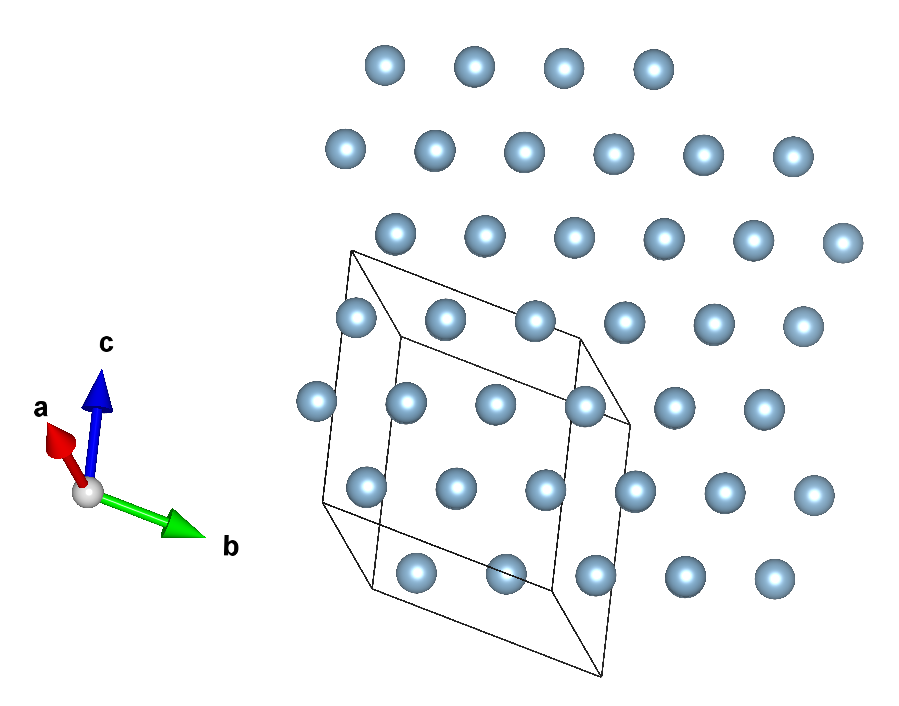
The structures are also stored in different files when using the Evolutive or Stochastic algorithm.
- If using
algorithm evolutive: The structures are stored in the summary.vasp file. - If using
algorithm stochastic: The structures are stored in a stageN.vasp file, where N will correspond to the stage of relaxation that took place.
GULP, the TiO2 case
Creating the input
First create a predefined input typing x-solids input_gulp in the terminal, or copy the next lines into a file of your choosing:
#Construction of the initial population
#This composition is used to build all structures
---COMPOSITION---
Ti 1
O 2
---COMPOSITION---
formula_units 4 #Atoms in composition are multiplied by this number
dimension 3 #Solids can handle 2- and 3-dimensional crystals
volume_factor 1.0 #The volume factor of the unit cell
tol_atomic_overlap 0.95 #The tolerances provided to allow atomic overlap
nof_initpop 30 #The size of the initial population
algorithm evolutive # Choose between stochastic / evolutive
#Niching process
tol_similarity 0.98 #Tolerance threshold for similarity
cutoff_energy 5.0 #Energy Cut-off in eV
cutoff_population 10 #Number of final candidates
#Calculator
calculator GULP #Available calculators: EMT, VASP, GULP
nof_processes 5 #Number of parallel local opts
path_exe /home/bin/gulp #Path to the executable of GULP
#Evolutive algorithm parameters
nof_matings 20 #Number of matings
nof_strains 6 #Number of strains
nof_xchange 6 #Number of atom exchanges
#Halting criterion parameters
#Stochastic algorithm
nof_stages 2 #Number of Optimization Stages
#Evolutive algorithm
nof_repeats 10 #Stops if the best solutions are found 5 consecutive times
nof_stagnant 5 #Controls the number of best solutions of nof_stagnant
nof_generations 10 #Number of generations
---GULP---
opti conj conp
switch_minimiser bfgs gnorm 0.5
vectors
LATTICEVECTORS
frac
COORDINATES
lib /Gulp/Libraries/matsui-akaogi.lib
---GULP---
GULP uses a combination of Buckingham and Lennard–Jones potentials to describe
the interactions of TiO2. These parameters are specific for the the system and are not interchangeable. Solids
reads them from the ---GULP--- block in the input, where the flags LATTICEVECTORS and COORDINATES are automatically replaced
to match those of each structure. On the other hand, the potentials for TiO2 are located in GULP's library
Matsui-Akaogi, and it is necessary to update the lib /Gulp/Libraries/matsui-akaogi.lib path
to the one of your computer. To locate it, go to your installation folder of GULP and look for the Libraries folder within it.
Once you have the input, run the code and store its output using:
x-solids inputFileGULP > outPutFile.txt
The flags used will tell Solids to explore the energy landscape of 4 formula units of 3D TiO2 crystals using
either the Evolutive or the Stochastic Algorithm (as dictated by the flag algorithm).
NOTE: There are extra flags that allow you to carry explorations with any algorithm. To switch, simply change
algorithm.
You don't need to remove the extra flags since Solids is programmed to recognize and use only the case-sensitive flags.
- If using
algorithm evolutive: The algorithm uses 30 random initial candidates, 20 generations, each consisting of 25 crossover, 6 atomExchange, and 6 latticeStrain mutants. - If using
algorithm stochastic: The algorithm uses 30 random initial candidates, relaxed through 2 stages.
Expected results
The resulting structure is the well-known rutile phase with the tetragonal P4₂/mnm space group where the Ti4+ (blue) is bonded to six equivalent O2-(red) atoms to form a mixture of corner and edge-sharing TiO6 octahedra. There are four shorter (1.95 Å) and two longer (1.98 Å) Ti-O bond lengths. Also, it is very likely that the other phases of TiO2, namely Anatase (A) and Brookite (C) are also listed amongst the higher-enery allotropes, as shown in the next figure:
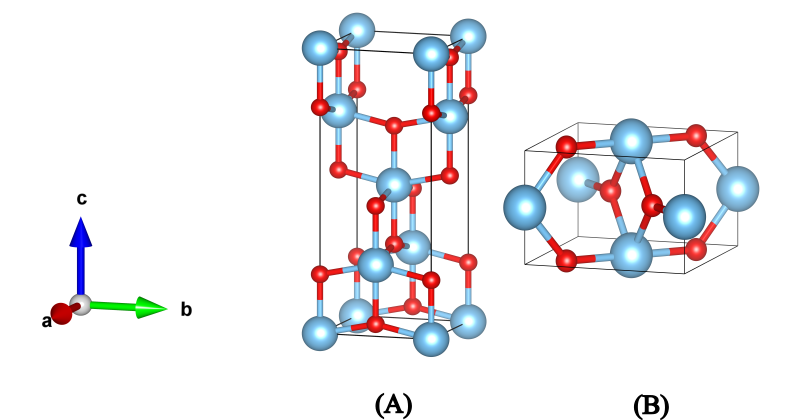
The structures are also stored in different files when using the Evolutive or Stochastic algorithm.
- If using
algorithm evolutive: The structures are stored in the summary.vasp file. - If using
algorithm stochastic: The structures are stored in a stageN.vasp file, where N will correspond to the stage of relaxation that took place.
Explorations under pressure, the MgAl2O4 case
Creating the input
First create a predefined input typing x-solids input_gulpPress in the terminal, or copy the next lines into a file of your choosing:
#Construction of the initial population
#This composition is used to build all structures
---COMPOSITION---
Mg 1
Al 2
O 4
---COMPOSITION---
formula_units 4 #Atoms in composition are multiplied by this number
dimension 3 #Solids can handle 2- and 3-dimensional crystals
volume_factor 1.0 #The volume factor of the unit cell
tol_atomic_overlap 0.95 #The tolerances provided to allow atomic overlap
nof_initpop 30 #The size of the initial population
algorithm evolutive # Choose between stochastic / evolutive
#Niching process
tol_similarity 0.98 #Tolerance threshold for similarity
cutoff_energy 10.0 #Energy Cut-off in eV
cutoff_population 20 #Number of final candidates
#Calculator
calculator GULP #Available calculators: EMT, VASP, GULP
nof_processes 5 #Number of parallel local opts
path_exe /home/bin/gulp #Path to the executable of GULP
#Evolutive algorithm parameters
nof_matings 25 #Number of matings
nof_strains 6 #Number of strains
nof_xchange 6 #Number of atom exchanges
#Halting criterion parameters
#Stochastic algorithm
nof_stages 2 #Number of Optimization Stages
#Evolutive algorithm
nof_repeats 10 #Stops if the best solutions are found 5 consecutive times
nof_stagnant 5 #Controls the number of best solutions of nof_stagnant
nof_generations 30 #Number of generations
---GULP---
opti conjugate nosymmetry conp
switch_minimiser bfgs gnorm 0.01
pressure 100 GPa
vectors
LATTICEVECTORS
frac
COORDINATES
space
1
species
Mg 2.0
Al 3.0
O -2.0
lennard 12 6
Mg O 1.50 0.00 0.00 6.0
Al O 1.50 0.00 0.00 6.0
O O 1.50 0.00 0.00 6.0
Mg Mg 1.50 0.00 0.00 6.0
Mg Al 1.50 0.00 0.00 6.0
Al Al 1.50 0.00 0.00 6.0
buck
Mg O 1428.5 0.2945 0.0 0.0 7.0
Al O 1114.9 0.3118 0.0 0.0 7.0
O O 2023.8 0.2674 0.0 0.0 7.0
maxcyc 850
switch rfo 0.010
---GULP---
GULP uses a combination of Buckingham and Lennard–Jones potentials to describe the interactions of MgAl2O4. These parameters are specific for the the system and are not interchangeable. Solids reads them from the ---GULP--- block in the input, where the flags LATTICEVECTORS and COORDINATES are automatically replaced to match those of each structure. Notice the flag pressure in the block, this is to indicate the magnitud of this quantity in GPa.
Once you have the input, run the code and store its output using:
x-solids inputFileGULPress > outPutFile.txt
The flags used will tell Solids to explore the energy landscape of 4 formula units of 3D MgAl2O4 crystals using
either the Evolutive or the Stochastic Algorithm (as dictated by the flag algorithm).
NOTE: There are extra flags that allow you to carry explorations with any algorithm. To switch, simply change
algorithm.
You don't need to remove the extra flags since Solids is programmed to recognize and use only the case-sensitive flags.
- If using
algorithm evolutive: The algorithm uses 30 random initial candidates, 30 generations, each consisting of 25 crossover, 6 atomExchange, and 6 latticeStrain mutants. - If using
algorithm stochastic: The algorithm uses 30 random initial candidates, relaxed through 2 stages.
Expected results
The resulting structure is a face-centered densely packed cubic lattice with a Fd3m space group. Internally, a sublattice composed of Mg2+ ions in an O-tetrahedral environment coexists with an octahedral environment formed by Al3+. Notice that MgO4 tetrahedra share corners with twelve equivalent AlO6 octahedra. Estimated interatomic distances are in accordance with the reported ones (MP-ID: mp-3536) with Mg-O bond lengths of 2.02 Å, displaying an RPD of 2% with the reported 1.94 Å. Also, every Al-O bond length matches perfectly with 1.92 Å.
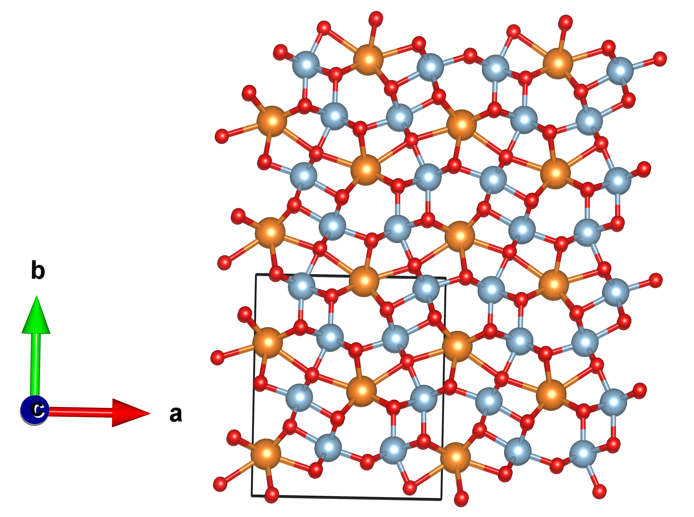
The structures are also stored in different files when using the Evolutive or Stochastic algorithm.
- If using
algorithm evolutive: The structures are stored in the summary.vasp file. - If using
algorithm stochastic: The structures are stored in a stageN.vasp file, where N will correspond to the stage of relaxation that took place.
Explorations guided by constrictions, the MgSiO3 case
A great example of the importance of crystal structure prediction is the identification
by USPEX of the post-perovskite phase of the MgSiO3, one of
the main components of earth's lower mantle. USPEX detected that this phase is only stable under extreme conditions
of pressure and temperature. They also provided a GULP-usable sudopotential as well as the a priori information of the unit cell
(available in USPEX's examples). Therefore, we use this values to demonstrate how to use Solids when using constrictions to
reduce the search space and direct the search. For the case of MgSiO3 the possible selection of space groups are
limited to numbers 16-74, while the unit cell is restricted to comply with the next parameters:
a = 2.474, b = 8.121, c = 6.138, and angles of (in degrees) ∝= 90.0, β = 90.0, ɤ = 90.0.
Creating the input
First create a predefined input typing x-solids input_gulpConst in the terminal, or copy the next lines into a file of your choosing:
#Construction of the initial population
#This composition is used to build all structures
---COMPOSITION---
Mg 1
Si 1
O 3
---COMPOSITION---
formula_units 4 #Atoms in composition are multiplied by this number
symmetries 16-74 #Restriction of space groups
fixed_lattice 2.474 8.121 6.138 90.0 90.0 90.0 #Restrictions on unit cell
dimension 3 #Solids can handle 2- and 3-dimensional crystals
volume_factor 1.0 #The volume factor of the unit cell
tol_atomic_overlap 0.95 #The tolerances provided to allow atomic overlap
nof_initpop 30 #The size of the initial population
algorithm evolutive # Choose between stochastic / evolutive
#Niching process
tol_similarity 0.98 #Tolerance threshold for similarity
cutoff_energy 10.0 #Energy Cut-off in eV
cutoff_population 20 #Number of final candidates
#Calculator
calculator GULP #Available calculators: EMT, VASP, GULP
nof_processes 5 #Number of parallel local opts
path_exe /home/bin/gulp #Path to the executable of GULP
#Evolutive algorithm parameters
nof_matings 25 #Number of matings
nof_strains 6 #Number of strains
nof_xchange 6 #Number of atom exchanges
#Halting criterion parameters
#Stochastic algorithm
nof_stages 2 #Number of Optimization Stages
#Evolutive algorithm
nof_repeats 10 #Stops if the best solutions are found 5 consecutive times
nof_stagnant 5 #Controls the number of best solutions of nof_stagnant
nof_generations 30 #Number of generations
---GULP---
opti conjugate nosymmetry conv
switch_minimiser bfgs gnorm 0.01
vectors
LATTICEVECTORS
frac
COORDINATES
space
1
species
Mg 1.8
Si 2.4
O -1.4
lennard 12 6
Mg O 2.5 0.0 0.0 6.0
Mg Si 1.5 0.0 0.0 6.0
Si O 1.5 0.0 0.0 6.0
Mg Mg 1.5 0.0 0.0 6.0
Si O 1.5 0.0 0.0 6.0
O O 2.5 0.0 0.0 6.0
buck
Mg O 806.915 0.291 2.346 0.0 10.0
Si O 1122.392 0.256 0.000 0.0 10.0
O O 792.329 0.362 31.58 0.0 10.0
Mg Mg 900.343 0.220 0.174 0.0 10.0
Mg Si 1536.282 0.185 0.000 0.0 10.0
Si Si 3516.558 0.150 0.000 0.0 10.0
maxcyc
400
switch rfo cycle 300
---GULP---
GULP uses a combination of Buckingham and Lennard–Jones potentials to describe the interactions of MgSiO3. These parameters are specific for the the system and are not interchangeable. Solids reads them from the ---GULP--- block in the input, where the flags LATTICEVECTORS and COORDINATES are automatically replaced to match those of each structure. Notice the flag pressure in the block, this is to indicate the magnitud of this quantity in GPa.
Once you have the input, run the code and store its output using:
x-solids inputFileGULConst > outPutFile.txt
The flags used will tell Solids to explore the energy landscape of 4 formula units of 3D MgSiO3 crystals using
either the Evolutive or the Stochastic Algorithm (as dictated by the flag algorithm). However,
special constrictions are applied to the unit cell. This constrictions are controlled by the flags symmetries
and fixed_lattice, that control the symmetries used to build the intial candidates, and the lattice vectors, accordingly.
NOTE: There are extra flags that allow you to carry explorations with any algorithm. To switch, simply change
algorithm.
You don't need to remove the extra flags since Solids is programmed to recognize and use only the case-sensitive flags.
- If using
algorithm evolutive: The algorithm uses 30 random initial candidates, 30 generations, each consisting of 25 crossover, 6 atomExchange, and 6 latticeStrain mutants. - If using
algorithm stochastic: The algorithm uses 30 random initial candidates, relaxed through 2 stages.
Expected results
The structure of the post-perovskite phase of MgSiO3 (corresponding to the one calculated at 120 GPa) is shown with blue octahedra of SiO6 and orange spheres representing the Mg atoms. This structure shows similarities with known structures for Fe2O3, and CaIrO3 to mention a few.
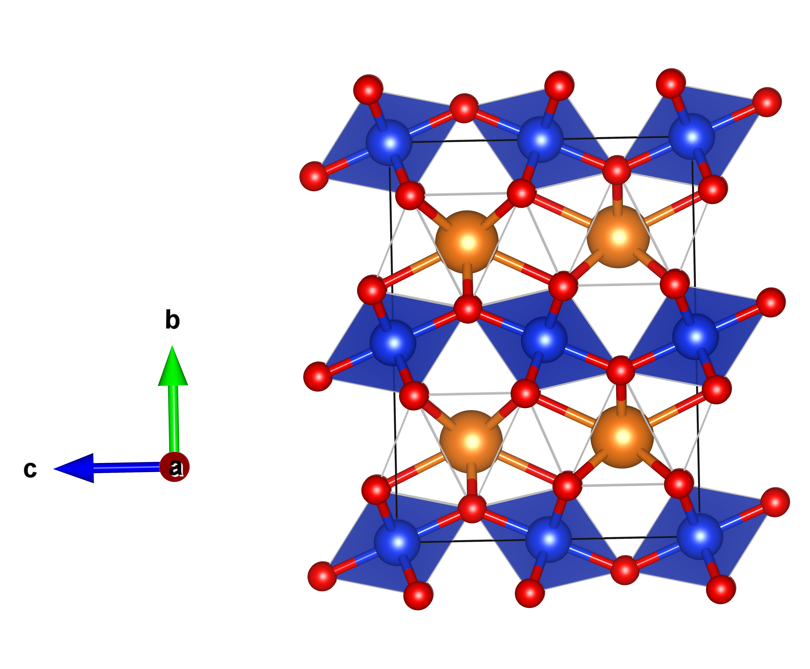
The resulting structures are stored in different files when using the Evolutive or Stochastic algorithm.
- If using
algorithm evolutive: The structures are stored in the summary.vasp file. - If using
algorithm stochastic: The structures are stored in a stageN.vasp file, where N will correspond to the stage of relaxation that took place.
Solids and VASP, the C8 case
Creating the input
First create a predefined input typing x-solids input_vasp in the terminal, or copy the next lines into a file of your choosing:
#Construction of the initial population
#This composition is used to build all structures
---COMPOSITION---
C 8
---COMPOSITION---
formula_units 4 #Atoms in composition are multiplied by this number
dimension 3 #Solids can handle 2- and 3-dimensional crystals
volume_factor 1.0 #The volume factor of the unit cell
tol_atomic_overlap 0.98 #The tolerances provided to allow atomic overlap
nof_initpop 30 #The size of the initial population
algorithm evolutive # Choose between stochastic / evolutive
#Niching process
tol_similarity 0.98 #Tolerance threshold for similarity
cutoff_energy 5.0 #Energy Cut-off in eV
cutoff_population 20 #Number of final candidates
#Calculator
calculator VASP #Available calculators: EMT, VASP, GULP
nof_processes 5 #Number of parallel local opts
#Evolutive algorithm parameters
nof_matings 25 #Number of matings
nof_strains 6 #Number of strains
nof_xchange 6 #Number of atom exchanges
#Halting criterion parameters
#Stochastic algorithm
nof_stages 2 #Number of Optimization Stages
#Evolutive algorithm
nof_repeats 10 #Stops if the best solutions are found 5 consecutive times
nof_stagnant 5 #Controls the number of best solutions of nof_stagnant
nof_generations 10 #Number of generations
---VASP---
---VASP---
The ---VASP--- block should contains all the required information to run a calculation using VASP. However, VASP installations are highly case-sensitive and this input will vary from system to system. Therefore we highly recommend that you contact your IT department or cluster administrator to fill in this section.
Once you have the input, run the code and store its output using:
nohup x-solids inputFileVASP > outPutFile.txt & log &
The flags used will tell Solids to explore the energy landscape of of 3D C8 crystals using
either the Evolutive or the Stochastic Algorithm (as dictated by the flag algorithm).
NOTE: There are extra flags that allow you to carry explorations with any algorithm. To switch, simply change
algorithm.
You don't need to remove the extra flags since Solids is programmed to recognize and use only the case-sensitive flags.
- If using
algorithm evolutive: The algorithm uses 30 random initial candidates, 30 generations, each consisting of 25 crossover, 6 atomExchange, and 6 latticeStrain mutants. - If using
algorithm stochastic: The algorithm uses 30 random initial candidates, relaxed through 2 stages.
Expected results
One of the lowest energy structures found will be composed of graphite layers in AB-stacking with an average C-C distance of 1.42 Å within the 6-carbon ring as shown in the next figure (B). Moreover, amongst the high-energy allotropes, the diamond phase will also be present, with its characteristic face centered cubic lattice and Fd3m space group (B).
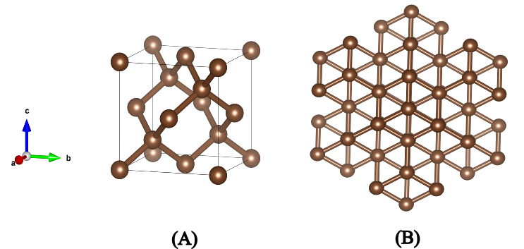
The resulting structures are stored in different files when using the Evolutive or Stochastic algorithm.
- If using
algorithm evolutive: The structures are stored in the summary.vasp file. - If using
algorithm stochastic: The structures are stored in a stageN.vasp file, where N will correspond to the stage of relaxation that took place.
Solids and Google Colab
One of the main advantages of Solids and its integration with the Atomic Simulation Environment (ASE) is the ability to run explorations on external servers. We illustrate this using the Google Colab platform, which offer free access and strong performance designed for collaborative coding. We highly recommend performing initial tests of Solids using this platform.
Installing the code
For this test, open a notebook in Google Colab and install the main code by typing:
!pip install solids
Creating the Input
The following lines show the input required for Solids to explore 3D Al10 crystals using the Effective Medium Theory (EMT) relaxation method implemented in ASE, and the Evolutionary Algorithm provided by Solids as the exploration engine. The input includes all the flags needed to run calculations with both available algorithms (Stochastic and Evolutionary). To switch between them, simply update the algorithm flag. Solids is designed to recognize case-sensitive flags, allowing you to easily change schemes by editing the corresponding parameter.
On the other hand, the output is rather simple to read, but if you would like to dive into more details, we recommend you to visit the Understanding the output section. Finally, you're all set! To explore the code and its features, add the next lines to the notebook, modify it to your likings, and run it!
input_text = """
---COMPOSITION---
Al 10
---COMPOSITION---
formula_units 1 #The number of atoms in composition are multiplied by this number
dimension 3 #Solids can handle 2- and 3-dimensional crystals
volume_factor 1.0 #The volume factor of the unit cell
tol_atomic_overlap 0.95 #The minimum distance between atoms is 95% the sum of their radii
#ALGORITHM PARAMETERS:
algorithm evolutive #Stochastic -> Stochastic algorithm, evolutive-> Evolutive Algorithm
nof_initpop 10 #Size of the initial population of crystals
#Evolutive:
nof_matings 15 #Number of matings
nof_strains 10 #Number of strains
nof_xchange 5 #Number of atom exchanges
#NICHING PARAMETERS:
tol_similarity 0.97 #Tol for similarity
cutoff_energy 5.0 #Energy Cut-off
cutoff_population 10 #Number of final candidates
#HALT CRITERION:
#Stochastic:
nof_stages 2 #Number of Optimization Stages in the Stochastich algorithm
#STOP CRITERION:
nof_generations 20 #Max generations
nof_repeats 5 #Number of repeated polymorphs
nof_stagnant 7 #Max stagnant cycles
#THEORY LEVEL:
calculator EMT #Available calculators: EMT, VASP, GULP
nof_processes 10 #Number of parallel local opts
"""
#Execution of main code
inputfile = 'INPUT.txt'
with open(inputfile, "w") as f: f.write(input_text)
if __name__ == "__main__":
from solids.heuristic import mainAlgorithm
xopt_sort=mainAlgorithm(inputfile)
Visualizing the Results
Solids uses the visualization tool implemented in Python's Library Aegon to present you with an embedded iterative image of the resulting candidate. To use it, simply run the next code:
from aegon.libgcolab import viewmol_ASE
from aegon.libposcar import conventional
print(xopt_sort[0].info['e'])
viewmol_ASE(conventional(xopt_sort[0],1.1))
If you wish to modify the size of the presented cell, just change the final number in the viewmol_ASE function to any desired value. Right now, this code shows the unit cell expanded by 110% in all three directions.
Understanding the Output
The output of every search is divided into four sections: 1.- Generation of Initial Candidates, 2.- Niching, 3.- Generation Summary, and 4.- Global Summary. Each of these sections narrate, correspondingly, the procedure followed to create each set of candidates (random, crossover, or mutation), the structural comparison between them, and the summary of the relaxation process. All sections are detailed in the next sections.
Generation of initial candidates
If you used the default settings, the exploration was performed using the Evolutionary Algorithm. Consequently, the header of this section reads ---GENERATION 0---, indicating the first set of created structures. As the search progresses, this number will increase, denoting the current iteration of the algorithm.
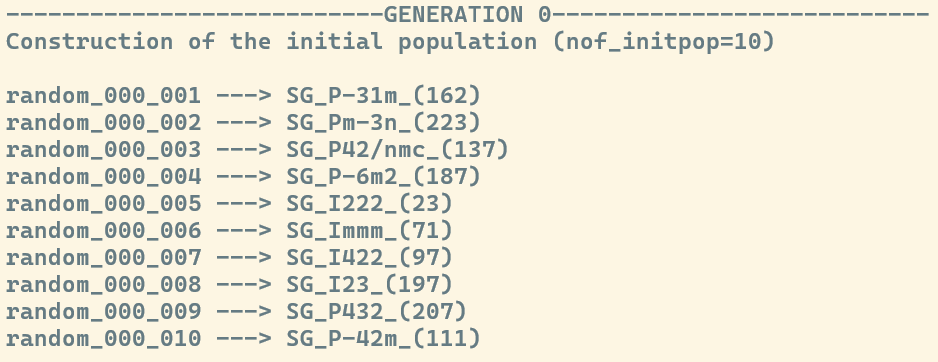
If you carried the exploration using the Stochastic Algorithm, then the header will read ---POPULATION GENERATOR---.
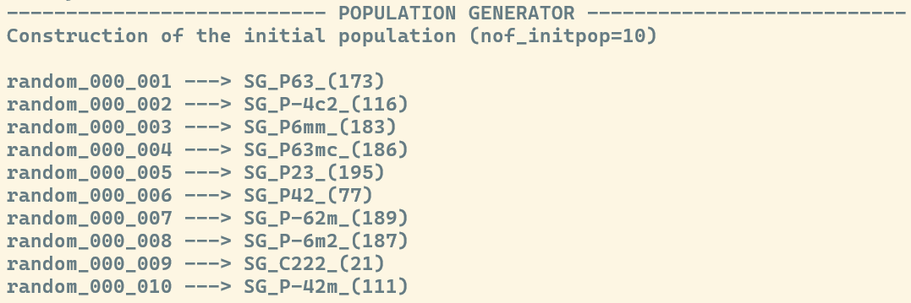
Below the respective header, you will find the ID of each candidate. This ID includes a
prefix describing how the structure was generated (random, mating, or mutant), the generation it belongs to (e.g., _010_), and the
specific structure number (e.g., _005_). For example: mating_010_005 refers to the 5th candidate
created via crossover (mating) in generation 10.
Next to the ID, you will find the space group used to generate the structure
SG. The numbering follows the Hermann-Mauguin convention, which classifies the 230 space groups
(for 3D) into seven crystal systems:
- Triclinic: 1-2
- Monoclinic: 3-15
- Orthorhombic: 16-74
- Tetragonal: 75-142
- Trigonal / Hexagonal: 143-194
- Cubic: 195-230
Niching and Energy-Based Filtering
The niching process removes duplicate structural information by characterizing all individuals in a generation using MBTR (Many-Body Tensor Representation) descriptors. This is accomplished by computing unique fingerprints for each candidate, comparing them to one another, and descarding any structures whose similarity exceeds a defined threshold. The flag controlling this tolerance is tol_similarity.When using the Evolutionary Algorithm, niching is applied in two critical stages:
- GENvsGEN comparison: A comparison among elements within the current generation. This step removes redundant information immediately after optimization.
- GENvsPOOL comparison: A comparison between the unique elements of the current generation and all previously discovered structures. This step ensures that the global set of structures (pool) remains diverse and free of duplicates.
Finally, there is an energy-based niching technique applied to the curated list of candidates (regardless the algorithm used). The energy of each structure in the set is compared to that of the lowest-energy candidate. Any candidates whose energy difference exceeds the threshold defined by the cutoff_energy flag are discarded. This allows the algorithm to focus its resources on the most promising regions of the PES, keeping the population within a relevant energy window.
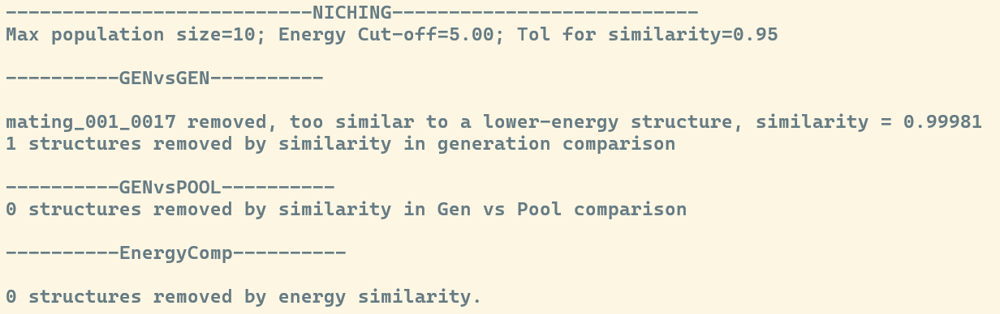
Generation Summary
If you're using the Evolutionary Algorithm, the complete compendium of structures identified within a specific generation is displayed in the ---GEN. SUMMARY--- section. The structures are sorted by energy, and for each candidate, the following data is provided (from left to right):
- Ranking : The position of the structure within the current generation.
- ID : The unique identifier (e.g., mating_010_005).
- Energy : The computed energy of the relaxed structure, reported in eV.
- Relative Energy (ΔE): The energy difference relative to the lowest-energy structure found in that generation.
- Fitness: A value that correlates with the probability of the structure being selected to participate in the inheritance process (Crossover or Mutation).
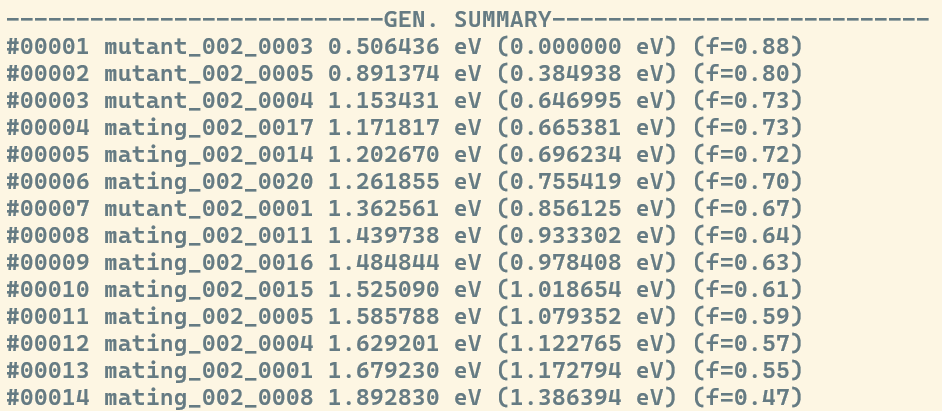
In contrast, the Stochastic Algorithm displays this summary after every stage of relaxation under the ---STAGE N SUMMARY---, where N is replaced to match the stage at hand.
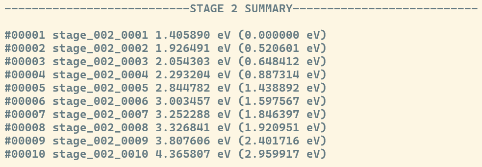
Global Summary
The ---GLOBAL SUMMARY--- section displays the "elite" structures, i.e., the best candidates found across the entire run so far. The number of structures presented in this list is controlled by the cutoff_population flag.The candidates listed here are of vital importance, as they are the ones that will "compete" to produce the next set of children through crossover and mutation. This list is sorted by energy and includes the Ranking, ID, Energy (eV), Relative Energy, and Fitness. By maintaining this global pool of high-fitness individuals, the algorithm ensures that the search stays focused on the most promising regions of the Potential Energy Surface while moving toward the Global Minimum.
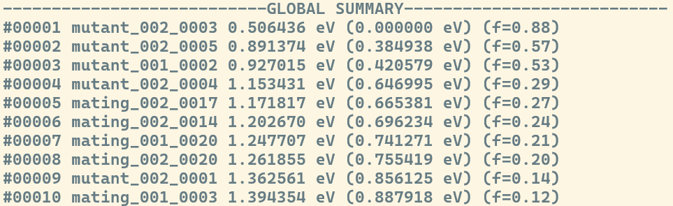
About the Developer
Contact Information
If you would like to collaborate, request technical support, or explore opportunities related to our scientific research feel free to reach out. We are always open to new ideas, partnerships, and interdisciplinary work.
You can contact us through the following channels, and we will get back to you as soon as possible:
- Email: carloast0790@outlook.com
- Location: Merida, Yucatan, Mexico
- LinkedIn: linkedin.com/company/
- GitHub: github.com/
Whether you're a student, researcher, company, or simply curious about innovative technology, we'd love to hear from you. Let's build something meaningful together.